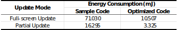

Motion-powered Gameboy
This research is supported by the Mechatronics and Energy Transformation Laboratory (METAL) at ShanghaiTech University
ABSTRACT
We present Motion-powered Gameboy, the first robust, motion-powered, user-friendly personal mobile gaming device. Our design is based on the ViPSN platform, implemented with a bistable energy harvester and bistable display. Bistable display technology makes it possible for screen-focused interactive battery-free devices to show images continuously even after power failure. A bistable energy harvester can be treated as a relatively stable energy source given the unique advantage of mechanical potential energy pre-charging. With a pre-designed bistable energy harvester and advanced energy management method, the amount of energy generated by button click can adequately meet it demands to perform an interaction, which guarantees the consistency of user experience in the application. The design methodology of Motion-powered Gameboy provides a valuable aspect for the development of interactive motion-powered devices.
Quick View
paper link
slides
PCB and SCH
Overview
Human-Computer Interaction (HCI) electronics are generally screen-centered, standard display technologies such as LCD and OLED demand sustained power source, display content will disappear upon power failures, whereas bistable display (e.g., E-ink and mechanical dot matrix) can hold the image permanently after power off. Thus bistable display can be a potential method to achieve battery-free HCI.
Another challenge that battery-free HCI devices are facing is how to meet the expectation, which means that the device should react as the user would expect; For example, upon the user pushes the key 'Enter,' a 'Hello, world!' should be displayed as content. Powering electronic devices without batteries has been an open research field for years. Methods of harvesting energy from ambient are widely discussed for the advantages of decentralization and maintenance, and there are different possible energy sources, including solar, radio frequency (RF), and mechanical vibrations. However, all of those methods have their pros and cons, and most are not fit for HCI application.
Solar energy density is high but is greatly affected by light intensity, RF energy is widespread, but there is a trade-off between distance and energy density because of attenuation, while mechanical vibration is considered to be the best alternative energy source for deployment without sunlight.
However, the traditional energy harvesting process is unpredictable, especially when it comes to the scenario of HCI. That is, most applications consider power as the more critical characteristic rather than energy. Whereas the user actions on a device can be predicted by pre-designing the interactive function; furthermore, the energy needed to finish the interaction can be measured or even calculated ahead. So it is energy that should take a seat when talking about HCI. Why do not pre-design the energy? So that we can make the whole process robust enough to meet users' expectations.
To process a battery-free HCI application, five hardware parts are essential: energy harvester, energy harvesting circuit, energy management circuit, microcontroller unit, and interactive peripherals. Also, software that represents an appropriate energy management method is needed. This article will introduce the design of Motion-powered Gameboy from perspectives of both hardware and software. On top of that, the solution presented in this article can be applied to other atomic high-energy-consumption applications.
Bistable energy harvester
Bistable energy harvesters are capable of coping with vibrations of frequency much lower than typical resonance frequencies. Besides relatively higher energy density, mechanical potential energy pre-charging is a unique advantage of the bistable energy harvester. We can adjust the amount of energy generated by the bistable energy harvester by pre-designing the mechanical structure.
potential energy pre-charging
There are many forms of bistable energy harvesters that have been widely discussed (e.g., ZF, Chlorop, and Linptech). PM5600 from Linptech is chosen to power the application considering the cost. The mechanical structure of PM5600 is symmetric. Thus the potential well is correspondingly symmetric, and it has two of the lowest overall energy points.

Fig 1. Bistable Energy Harvester PM5600
PM5600 can harvest energy from a state change, and the harvesting process can be illustrated as steps below:
1. The initial position of the magnet on the harvester is at one of the two lowest overall energy points.
2. While the user continues pressing the plectrum, the plectrum gets bend. The elastic force from the plectrum increases with the bending (but is still smaller than the magnetic force in this process), elastic potential energy is stored in the bending plectrum.
3. The plectrum will reach the critical point when the elastic force offered by the plectrum equals the magnetic force, and the magnet is still at the initial position.
4. A elastic force larger than the magnetic force will break the balance. After that, the magnetic force cannot counteract the elastic force anymore; energy stored in the plectrum will be released to speed up the magnet to move from the initial position. The magnetic force from the other side will increase with displacement increasing, which will furtherly speed up the magnet until it moves to the other stable position. The total energy will fall to the other lowest points in the potential well at the same time. During this process, the magnetic field intensity through the coil rapidly changes so that energy can be released in the form of charge transition.
Since the characteristics of the potential well are determined by the mechanical structure, once the load is fixed, the amount of energy generated by each click is fixed too.
1. The initial position of the magnet on the harvester is at one of the two lowest overall energy points.
2. While the user continues pressing the plectrum, the plectrum gets bend. The elastic force from the plectrum increases with the bending (but is still smaller than the magnetic force in this process), elastic potential energy is stored in the bending plectrum.
3. The plectrum will reach the critical point when the elastic force offered by the plectrum equals the magnetic force, and the magnet is still at the initial position.
4. A elastic force larger than the magnetic force will break the balance. After that, the magnetic force cannot counteract the elastic force anymore; energy stored in the plectrum will be released to speed up the magnet to move from the initial position. The magnetic force from the other side will increase with displacement increasing, which will furtherly speed up the magnet until it moves to the other stable position. The total energy will fall to the other lowest points in the potential well at the same time. During this process, the magnetic field intensity through the coil rapidly changes so that energy can be released in the form of charge transition.
Bistable display
E-ink rearranges pigment particles by applying an electric field, and the particles reflect ambient light to display.
In this project, 1.54-inch E-paper GDEH0154D67 is used for the field test, which is one of the most low-power and off-the-shelf commercial Electrophoretic Display (EPD) that we can find. GDEH0154D67 integrates the EPD panel with the corresponding IC and circuit; GDEH0154D67 works as the peripheral of MCU in specific applications and is controlled over SPI. As most peripherals are in the market, the module is not optimized for battery-free applications. Thus, the operation flow should be treated as a high-energy-consumption atomic task.
Fig 2. EPD Operation Flow

Typical operation flow is shown in Fig 2. EPD must be initialized once power-on; after that, the operation should always be Full-screen Update. In this mode, the EPD will be cleaned up first, and then the image can be updated to the display. After performing a Full-screen Update, the EPD can enter the Partial Update mode, in which the EPD can update the content without cleaning up the old image first.
BLE Cortex-M4F MCU nRF52832 is employed for the field test. nRF52 is a general-purpose low-power SoC. Running the sample code from the manufacturer of EPD on nRF52, the energy consumptions of the two provided update modes are shown in the chart. We will discuss our approaches to optimize the energy consumption in Section: Energy Management Solutions.
Table 1. Energy Consumption in different Update Modes

Energy harvesting circuit
In order to offer a consistent user experience, spring is added to the bistable energy harvester PM5600 to automatically reset its position after each click. As a result, the harvester will generate two pulses in opposite directions in each cycle. A full-wave bridge rectifier can be used to harvest energy from both pulses.
We measured the amount of energy generated per click at various initial voltages, using 470uF and 1000uF capacitor as the load respectively. The results are shown in Chart 1. We can see that the power is generally higher using a 1000uF capacitor compared to 470uF. Thus, 1000uF is chosen as the storage. Additionally, when the storage voltage is between 2-4.5V, the energy generated by each click can reach a maximal 1.2mJ. So the threshold to trigger the system should not be too far from 4.5V.
Chart 1. Energy Generated at different Initial Voltage

Energy management solutions
When electronics have to work under battery-free constraints, they might not work persistently, which brings difficulties to designing battery-free nodes such as unpredictable control-flow, compromising an application's forward progress, inconsistent memory, leaving a device inconsistent with its environment, and complicating device-to-device communication. There are many State-of-the-art techniques, including hardware-based and software-based methods, published to enable a system to perform computation spanning power outages efficiently.
Hardware-based solutions such as Clank and QuickRecall employ non-volatile memory (FRAM) instead of on-chip SRAM so that the state can survive over power failures. However, it consumes more power running from FRAM compared to traditional SRAM, and these architectures also need customized hardware that is not widely accepted by the market.
Software-based solutions take advantage of both faster and more energy-efficient SRAM and non-volatile FRAM. For example, intermittent computing (e.g., Hibernus and Hibernus++) can save a snapshot before a power failure, task-based checkpointing systems (e.g., Mementos and WISP) can handle and optimize larger energy-cost tasks, differential checkpointing system (e.g., DICE and MPatch) ensure there is always one valid checkpoint.
The process to generate an interaction should be viewed as an atomic task; thus, the task-based checkpointing method is preferred. The node should be able to set checkpoints during processing.
Out-of-Box solution
Since E-ink can hold the content after power off due to its physical characteristics, there are some born-with advantages about the low-power display. It is a very straightforward solution to achieve long-term applications by employing a tiny battery. For example, you can clean up the old content once power-on and then cut off power after updating the new content. Those E-ink-based applications are easy to buy in the market; non-HCI devices such as calendars and tags can work for months without replacing the battery, and HCI devices such as Kindle and DPT-RP1 can work for weeks without charging.
Without any modification to the sample code, a single frame update needs more than 70 mJ. Although it is possible to achieve battery-free by being equipped with strong enough energy storage, the user would be suffering when powering the device.
There are several things to do to reduce power consumption:
1. Maximizing time in low-power modes (interrupts to wake the processor and control program flow);
2. Switching on peripherals only when needed;
3. Reduce extra control flow.
1. Maximizing time in low-power modes (interrupts to wake the processor and control program flow);
2. Switching on peripherals only when needed;
3. Reduce extra control flow.
Two iterations of the energy solution below will show the details about how we reduce the power consumption as much as possible.
Solution based on flash
In this project, we struggle to reduce power consumption mainly from four perspectives:
1. Interrupts to wake the processor and control program flow
2. Modification in communication protocol
3. MOS to switch on/off peripherals
4. Optimization of the state machine and peripheral operation flow
The hardware architecture is shown in Fig 3, we employed MOSFET to switch on the Eink only during the updating.
For the software part, as shown in Fig 4, the MCU enters the Power Management mode (PM mode or low-power mode) after completing essential initialization. The low-power mode power consumptions of each component are listed in Table 2. The total power consumption is around 26uW. Interrupts of reaching the threshold generated by the Low-power Comparator (LPCOMP) would wake up the microcontroller, the MCU would initial Eink over SPI upon the wake-up and then restore the previous game process from FRAM. After a new frame of the game is processed, a snapshot of the current state would be retained into the FRAM.
And we modified the operation flow of the EPD as shown in the figure in Section: Bistable Display. It is a little trick that I found in experiments that perhaps does not work for other peripheral. The modification makes it possible to jump over the full-screen update process, which is required by the manufacturer in the sample code. After that, we can transmit the old and the new image sequentially, then call the function to process the partial display. We also modified the SPI protocol by finding the most energy-efficient transmission rate and putting the MCU into sleep mode with the help of Direct Memory Access (DMA) and interrupts.
The total energy consumption is reduced by 70 percent as shown in Table 5.
1. Interrupts to wake the processor and control program flow
2. Modification in communication protocol
3. MOS to switch on/off peripherals
4. Optimization of the state machine and peripheral operation flow
hardware
Fig 3. Hardware Architecture
software
Fig 4. State machine
Table 2. Power Consumption of Flash-based solution in Power Management mode

Table 3. Energy Consumption of Flash-based Solution

We can notice that the flash operations consume 41% of the total energy, so it is straightforward to replace the flash with a more energy-efficient component such as FRAM
Solution based on Fram
Here is the FRAM-based solution. A MOSFET is also employed to switch on the FRAM only when needed. The idle power consumption is increased by about 3uW, as shown in Table 4.
hardware
Fig 5. Hardware Architecture
software
Fig 6. State machine
Table 4. Power Consumption of FRAM-based solution in Power Management mode

comparison
Table 5. Comparison of Energy Consumption using different Energy Solution
Pre-design from demand
Now, the energy consumption is small enough for us to design the harvester. We employed four bistable energy harvesters so that energy generated by each click is 4.8mJ theoretically which is strong enough to power the device. We also introduced the lever structure to reduce the force required to trigger, which improves the user’s experience.
Fig 7. Exploded View of the Motion-powered Gameboy
The Experimental Charge and Discharge Circle is shown in the figure. Energy generated by user’s click can precisely meet the demand of the Motion-powered Gameboy.
Fig 8. Experimental Charge and Discharge Circle

We are continuing to demonstrate more details ...